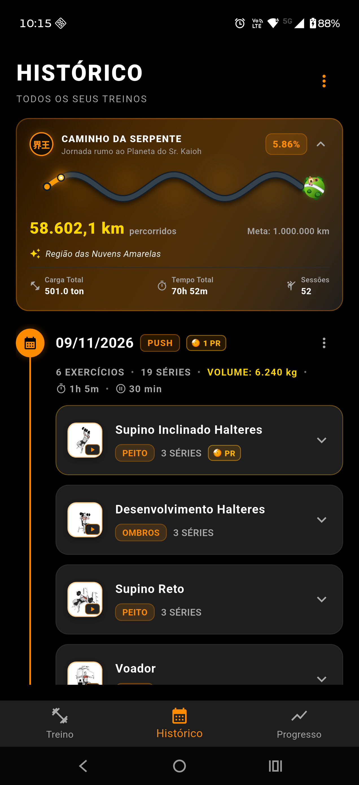
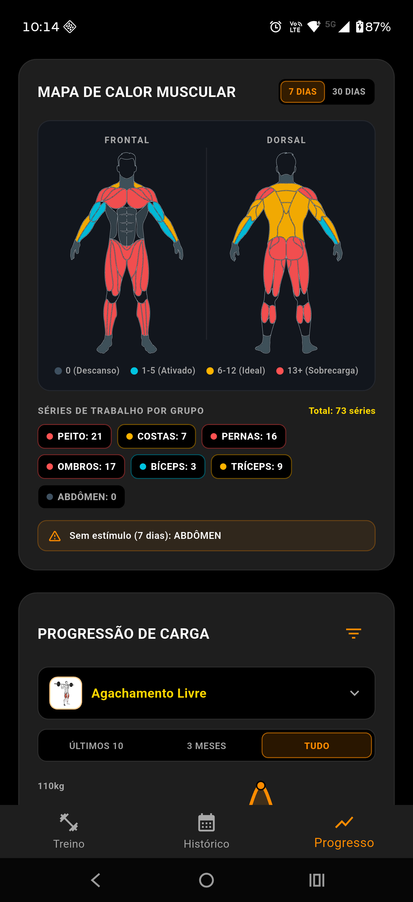

Sistema Saiyajin & Progressão de Poder (Ki)
O Gym Saiyajin combina o rigor do treinamento de força e hipertrofia com uma temática autêntica, sóbria e canônica do universo Dragon Ball. O sistema de gamificação foi desenhado para incentivar a consistência, a sobrecarga progressiva e a superação contínua de recordes pessoais, mantendo sempre uma apresentação esportiva de alto nível sem poluição visual ou excesso de emojis infantis.
🧮 1. A Fórmula Híbrida do Poder de Luta (Ki)
O Poder de Luta do guerreiro é dinâmico e reflete tanto a força bruta quanto o volume acumulado e a frequência de superação:
Decomposição dos 3 Pilares:
- Força Base (\(\sum \text{Maior 1RM} \times 10\)):
- Para cada um dos 6 grupos musculares principais (Peito, Costas, Pernas, Ombros, Braços, Abdômen), o sistema identifica o exercício com a maior estimativa de repetição máxima (1RM).
-
A soma desses maiores 1RMs é multiplicada por 10. Esse pilar garante que a evolução na intensidade absoluta dos exercícios fundamentais (supinos, agachamentos, terras, desenvolvimentos) impulsione diretamente o patamar do atleta.
-
Vigor Saiyajin (\(\frac{\text{Volume Histórico}}{100}\)):
- Volume total levantado em toda a jornada pelo atleta: $\(\text{Volume} = \sum (\text{peso} \times \text{repetições})\)$
-
Dividido por 100. Premia a consistência, a resistência neuromuscular à fadiga e a capacidade de trabalho acumulada nas incontáveis sessões de ferro contra a gravidade.
-
Limites Superados (\(\text{PRs} \times 150\)):
- Cada novo Recorde Pessoal (PR) conquistado (seja por carga absoluta ou por 1RM estimado) concede +150 de Ki permanente.
- Bônus imediato: ao finalizar uma sessão com PRs, o card comemorativo e o card de encerramento destacam o ganho instantâneo de Ki.
👑 2. Patamares de Poder & Transformações Canônicas
O Ki acumulado determina o Patamar de Poder do guerreiro, desbloqueando auras visuais, cores de destaque e subtítulos épicos na interface:
| Patamar | Faixa de Ki | Cor do Badge | Lente do Scouter | Subtítulo Épico Oficial |
|---|---|---|---|---|
| Classe Baixa | 0 – 999 | #9E9E9E (Cinza neutro) |
#9E9E9E |
Início da jornada do guerreiro |
| Guerreiro Z | 1.000 – 3.999 | #4FC3F7 (Azul Celeste) |
#4FC3F7 |
Defensor em treinamento constante |
| Elite Saiyajin | 4.000 – 7.999 | #FF5252 (Vermelho concentrado) |
#FF5252 |
Aura vermelha de poder concentrado |
| Super Saiyajin | 8.000 – 14.999 | #FFD700 (Dourado clássico) |
#FFD700 |
O lendário guerreiro dourado despertou |
| Super Saiyajin 2 | 15.000 – 29.999 | #FF9E00 (Âmbar elétrico) |
#00E5FF (Ciano elétrico) |
A fúria que rompeu a barreira do Super Saiyajin |
| Super Saiyajin 3 | 30.000 – 49.999 | #FF6D00 (Laranja cósmico) |
#FF6D00 |
A força colossal que faz o universo estremecer |
| Instinto Superior | 50.000+ | #FFFFFF (Prata celestial) |
#80D8FF (Azul divino) |
O estado divino onde o corpo age por puro instinto |
Destaque Visual do Super Saiyajin 2:
- Card e Borda Harmonizados: Borda externa do card em gradiente âmbar elétrico
#FF9E00, proporcionando uma transição visual límpida e nobre entre o ouro do SSJ1 e o fogo do SSJ3. - Lente do Scouter em Ciano Elétrico (
#00E5FF): Em alusão aos raios bioelétricos característicos do SSJ2, o visor holográfico doScouterIconassume a tonalidade ciano, criando um contraste estético esportivo impecável sem poluir as molduras.
🎨 3. Componentes Vetoriais Nativos (CustomPainter)
Eliminamos o uso excessivo de emojis genéricos (como 📦 ou ⚡) em favor de ícones vetoriais proprietários desenhados diretamente no Canvas do Flutter:
DragonBallIcon
- Arquivo:
lib/widgets/dragon_ball_icon.dart - Renderização:
- Esfera com gradiente radial âmbar/laranja profundo (
#FFB703\(\to\)#FB8500). - Brilho especular translúcido simétrico simulando reflexo de cristal/acrílico.
- Estrelas vermelhas de 5 pontas desenhadas matematicamente com funções trigonométricas (\(\cos/\sin\) a cada \(72^\circ\)) e facetas 3D rubi.
- Suporte procedural completo a qualquer constelação de 1 a 7 estrelas: 1 (centro), 2 (diagonal), 3 (triângulo), 4 (losango do Vovô Gohan), 5 (quincunce), 6 (grade 2x3) e 7 (anel circular com centro).
- Gamificação Oficial dos PRs:
- Correspondência Direta: No modal de encerramento do treino e no card social, o número de estrelas reflete o total de PRs batidos no dia (1 PR = Esfera de 1 Estrela ⭐, até 7 PRs = Esfera de 7 Estrelas ⭐⭐⭐⭐⭐⭐⭐).
- Na Série em Andamento: A tag de PR ativo em tempo real exibe uma mini Esfera do Dragão de 1 estrela.
- No Quadro de Recordes: A esfera do card e cabeçalho adapta suas estrelas de acordo com a quantidade total de recordes históricos registrados.
ScouterIcon
- Arquivo:
lib/widgets/scouter_icon.dart - Renderização:
- Haste ergonômica auricular com detalhes de parafusos e juntas mecânicas.
- Arco superior angular com textura de liga metálica.
- Lente translúcida frontal chanfrada em acrílico holográfico reativa à transformação.
- Retículo de mira/alvo interno digital e linhas de telemetria estilizadas.
- Uso Oficial:
- Carimbo tecnológico de telemetria no modo de compartilhamento Scouter HUD.
- Identificador visual da transformação atual do guerreiro no modal de level-up e painel de Ki.
DragonRadarIcon
- Arquivo:
lib/widgets/dragon_radar_icon.dart - Renderização:
- Bisel metálico chanfrado prateado e dial clássico de cronômetro no topo.
- Visor CRT verde militar escuro com retículo de grade de coordenadas ortogonais.
- Seta norteadora rubi central e mira amarela.
- Esferas do Dragão dinâmicas (
dots: 0..7) piscando com halo e núcleo luminosos. - Uso Oficial:
- Gamificação da Meta Semanal no Dashboard de Progresso (cada dia ativo de treino na semana ilumina uma Esfera do Dragão no radar).
CapsuleIcon
- Arquivo:
lib/widgets/capsule_icon.dart - Renderização:
- Cápsula Hoi-Poi cilíndrica com calotas hemisféricas peroladas em branco/prata com reflexo curvo de vidro.
- Botão metálico de acionamento no topo (push trigger com haste cilíndrica e anel de retenção).
- Faixas coloridas vibrantes (com suporte a azul clássico Capsule Corp, laranja Saiyajin, verde e vermelho).
- Faixa central preta técnica com o logotipo circular canônico da Capsule Corp (monograma em "C" concêntrico).
- Orientação isométrica dinâmica (~35°) e iluminação 3D longitudinal com sombra projetada.
- Uso Oficial:
- Representação oficial do card de Composição Corporal e Medidas (IMC e Percentual de Gordura) no Dashboard de Progresso.
PlanetaKaiohIcon
- Arquivo:
lib/widgets/planeta_kaioh_icon.dart - Renderização:
- Planeta esférico cel-shaded com gradiente volumétrico 3D em verde musgo/esmeralda.
- Estrada anelar circular pavimentada com curvatura elíptica em torno do pequeno astro.
- O clássico carro conversível vintage esportivo vermelho do Sr. Kaioh estacionado sobre a pista.
- Casa em domo clássica bege com teto marrom tradicional e anexo lateral de garagem.
- Bosques de árvores com copas em relevo ao longo do contorno do planeta.
- Uso Oficial:
- Ponto de chegada supremo e meta final na barra de progresso do Caminho da Serpente (
CaminhoSerpenteProgressBar).
EscotilhaCamaraPainter
- Arquivo:
lib/widgets/escotilha_camara_painter.dart - Renderização:
- Aro exterior circular em liga metálica escura chanfrada em 3D com 8 rebites industriais prateados simétricos.
- Anel de fluido bioenergético com gradiente Ouro Super Saiyajin e Laranja Ki (
#FFD700\(\to\)#FF8C00). - Vidro escurecido com fluido de Ki submarino profundo e reflexo curvo de curvatura acrílica.
- Silhueta sutil da máscara de oxigênio submersa ao fundo com grelha de ar e mangueiras sanfonadas.
- Micro-bolhas procedurais de oxigênio em subida senoidal contínua.
- Uso Oficial:
- Visual temático do cronômetro circular de descanso (
CronometroWidget), contextualizando a recuperação biológica dos guerreiros como a Câmara de Cura/Regeneração Médica de Dragon Ball Z.
KintoUnIcon
- Arquivo:
lib/widgets/kinto_un_icon.dart - Renderização:
- Silhueta cel-shaded da Nuvem Voadora (Kinto-un) com cúpulas volumétricas, gradiente dourado (
#FFF59D\(\to\)#FFD700\(\to\)#FFA000), rastro aerodinâmico e halo de Ki opcional. - Uso Oficial:
- Marcador de séries de Aquecimento (
tipo: 'warmup'), indicando recrutamento neuromuscular preparatório sem poluir recordes.
📊 4. Estimativa de 1RM (Fórmula de Epley Refinada) & Série Ápice de PR
Para mensurar recordes e calcular o Poder de Luta sem forçar o praticante a testar cargas máximas perigosas com 1 repetição, o app adota a fórmula de Epley com salvaguardas fisiológicas:
- Blindagem de Séries de Aquecimento (
warmup): Séries marcadas como aquecimento são automaticamente excluídas do cálculo de 1RM, da detecção de PRs e do pilar de Força Base do Poder de Luta. - Teto Estatístico de 15 Repetições: Séries com mais de 15 reps medem primordialmente resistência muscular localizada (RML) e não força máxima neuromuscular; portanto, a fórmula limita o multiplicador em 15 para prevenir distorções hiperbólicas nos cálculos de 1RM.
- Identificação da Série Ápice da Sessão (
obterMapaPRsDaSessao): Ao reconstruir cronologicamente o histórico, caso múltiplas séries de um mesmo exercício superem o recorde anterior na mesma sessão, o sistema destaca como[🟠 PR]unicamente a série ápice (aquela que atingiu o novo topo absoluto de carga ou 1RM do exercício naquele treino), mantendo correspondência 1-para-1 com o contador de PRs da sessão. - Formatação Limpa: Valores inteiros são apresentados sem casas decimais (
120 kg), enquanto frações preservam uma casa decimal (102.5 kg).
🐍 5. O Caminho da Serpente & Odômetro de Ferro (1.000.000 km)
Na lore canônica de Dragon Ball Z, o Caminho da Serpente (Snake Way) tem exatamente 1 milhão de quilômetros de extensão e paira sobre as nuvens do Outro Mundo, conectando o Palácio de Enma Daioh ao Planeta do Senhor Kaioh. Representa a prova máxima de disciplina física e resiliência mental que Goku enfrentou para obter o treinamento dos Deuses.
No Gym Saiyajin, a constância de meses e anos na academia é traduzida diretamente na travessia dessa estrada mística:
A. A Fórmula dos Quilômetros de Ferro
- Cada 10 kg erguidos no acumulado de todos os treinos equivalem a 1 km percorrido no Caminho.
- Cada 1 minuto sob esforço ativo de ferro e recuperação soma 2 km adicionais de marcha.
- A Meta Absoluta é fixada em 1.000.000 km, premiando a consistência ininterrupta no estilo de vida do ferro.
B. Marcos Narrativos Canônicos (Lore por Porcentagem)
De acordo com a distância percorrida (\(\frac{\text{km}}{1.000.000} \times 100\)), o guerreiro atinge marcos canônicos exibidos no card expansível do histórico:
| Faixa (%) / Distância | Marco Narrativo Oficial | Lore de Dragon Ball Z |
|---|---|---|
| 0.0% – 4.9% (< 50.000 km) | Cauda da Serpente (Início da Jornada) | O guerreiro recebe a permissão especial de Enma Daioh e inicia a corrida épica sobre a cauda da serpente. |
| 5.0% – 19.9% (50.000 – 199.999 km) | Região das Nuvens Amarelas | Vencendo os primeiros trechos sinuosos sobre o manto dourado do Outro Mundo; o corpo começa a forjar resistência. |
| 20.0% – 49.9% (200.000 – 499.999 km) | Palácio da Princesa Serpente | Resistindo às distrações, preguiça e tentações de abandonar o caminho sagrado da força. |
| 50.0% – 79.9% (500.000 – 799.999 km) | Fim do Nevoeiro do Outro Mundo | Metade do caminho superada com sucesso; o nevoeiro se dissipa revelando a disciplina de ferro inabalável. |
| 80.0% – 99.9% (800.000 – 999.999 km) | Cabeça da Serpente (Aterrissagem Iminente) | A cabeça da serpente desponta nas alturas; o campo de gravidade de 10x do planeta já começa a ser sentido. |
| 100.0%+ (≥ 1.000.000 km) | Planeta do Sr. Kaioh (Travessia Concluída!) | O guerreiro alcança o pequeno planeta sagrado e está pronto para o Treino com Pesos Divinos! |
C. Apresentação Visual no Histórico

- Barra Senoidal Contínua (
CaminhoSerpenteProgressBar): Ondulação suave de seno (\(2.5\) ciclos), drop shadows espaciais, aura de Ki que se desloca com o avanço e oPlanetaKaiohIconancorado na chegada. - Interatividade & Ocultação Inteligente: A barra permanece sempre visível para impacto estético instantâneo, enquanto os números analíticos (odômetro numérico, texto do marco e os 3 cards de carga, tempo e sessões) expandem ou recolhem suavemente ao toque.
⚡ 6. A Aura de Ki Saiyajin (KiAuraIcon)
A. Lore & Conceito Fisiológico
Em Dragon Ball Z, o Ki (気) é a força vital que emana do espírito e dos músculos do lutador. Quando um guerreiro eleva seu poder ao extremo ou atinge novas transformações, o Ki transborda na forma de uma Aura Flamejante (Ki Aura) que envolve todo o corpo com labaredas verticais afiadas e faíscas elétricas.
No treinamento esportivo do Gym Saiyajin, essa aura simboliza o Vigor e a Capacidade de Trabalho Neuromuscular gerados através do acúmulo contínuo de repetições e volume de carga.
B. Especificação Visual Cel-Shaded
- Silhueta de Fogo Ascendente: Labaredas esguias com pontas agudas voltadas para o alto (upward energy flames), pico central dominante e cristas dinâmicas bilaterais.
- Camadas de Profundidade:
- Halo Difuso (Glow): Emissão luminosa perimétrica em desfoque gaussiano suave.
- Casca Principal: Gradiente energético da cor primária para a secundária com contorno iluminado.
- Núcleo Superdenso (Inner Core): Chama interna clara simulando compressão máxima de plasma e energia.
- Sparks de Alta Tensão: Faíscas e relâmpagos pontiagudos flutuando nas laterais.
- Harmonização de Transformações: Cores adaptáveis dinamicamente às transformações Saiyajin (Classe Baixa, Guerreiro Z, Elite Saiyajin, Super Saiyajin 1/2/3).
🔥 7. Mapa de Calor Muscular & Telemetria Fisiológica (ScouterAnatomicoWidget)

Para orientar a distribuição equilibrada do volume de treinamento e evitar pontos fracos (lagging muscles) ou sobretreinamento localizado, o Dashboard de Progresso integra um Mapa de Calor Muscular Frontal e Dorsal baseado em séries válidas (excluindo aquecimentos):
| Estágio Fisiológico | Volume (7 Dias) | Volume (30 Dias) | Cor no Mapa | Significado no Treinamento |
|---|---|---|---|---|
| Sem Estímulo | 0 séries |
0 séries |
#2D3748 (Cinza-azulado) |
Grupo muscular em repouso total na janela selecionada. |
| Ativado | 1–5 séries |
1–23 séries |
#00E5FF (Ciano bioelétrico) |
Volume de manutenção ou estímulo inicial de recrutamento. |
| Zona Ideal | 6–12 séries |
24–48 séries |
#FFD700 (Ouro Super Saiyajin) |
Faixa ótima de volume semanal/mensal para hipertrofia. |
| Sobrecarga | 13+ séries |
49+ séries |
#FF5252 (Rubro Kaioken) |
Alto volume acumulado; requer atenção à recuperação articular e do SNC. |
🛡️ 8. Blindagem Temática: Fisiologia Esportiva como Alicerce da Lore
Para que o Gym Saiyajin mantenha credibilidade inabalável como aplicativo de musculação sério, todo o sistema opera sob o princípio de Fisiologia em Primeiro Lugar:
- Anti-Caricatura: Elementos de anime nunca viram piadas infantis ou gritos desconectados na tela. O tom do guerreiro é estoico, focado na autossuperação, disciplina e no silêncio concentrado da Sala do Tempo.
- Equivalência Biológica Real:
- Câmara de Cura = Recuperação celular de ATP-CP, tamponamento de \(H^+\) e restauração de glicogênio muscular.
- Caminho da Serpente = Princípio da Continuidade e Sobrecarga Progressiva acumulada ao longo de meses e anos.
- Cápsulas Hoi-Poi = Engenharia de precisão para modularização de rotinas e templates de treino.
- Ki & Patamares = Capacidade neuromuscular composta (força máxima 1RM \(\times\) volume total de repetições).
- Ergonomia Intocável: Os inputs de carga em kg, repetições e o cronômetro têm prioridade visual máxima sobre quaisquer adornos estéticos.